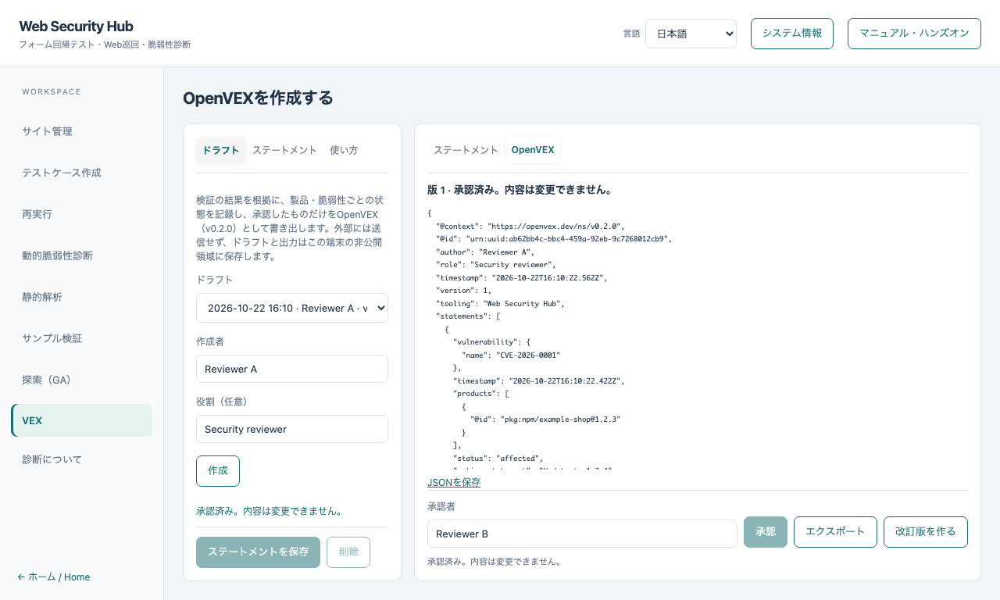

OpenVEX ハンズオン
English · 遺伝的探索 · 基本ハンズオン
検証の結果を OpenVEX（v0.2.0）の文書にします。証拠が状態を提案し、名前のあるレビュー担当者が決め、承認したドラフトだけを書き出します。
外部には送信せず、ドラフトと出力はこの端末の非公開領域に保存します。
1. 先に検証を実行する
サンプル検証または遺伝的探索を実行します。保存された結果が、VEX 画面に証拠として表示され、それぞれ「再現」「再現せず」「判定不能」と示されます。取り消した実行、timeout した実行、途中で止まった実行は、「再現せず」ではなく「判定不能」です。ソースだけの結果は常に「判定不能」です。
2. ドラフトを作る
左のナビゲーションで VEX を選び、ドラフトで作成者（必要なら役割）を入力して 作成 を押します。
3. ステートメントを追加する
ステートメントを開きます。脆弱性ID（CVE や GHSA の ID、または独自のID）、製品ID（pkg:npm/example-shop@1.2.3 のようなパッケージURL。SHA-256 も任意で指定できます）を入力し、根拠にする検証結果を選びます。証拠から状態を提案は、選んだ結果に再現したものがあるときだけ「影響あり（affected）」を提案し、それ以外は「調査中」を提案します。

| 状態 |
必要なもの |
| 調査中（under_investigation） |
追加の入力は不要です。再現しなかった・判定不能な結果が支えられるのはこの状態です |
| 影響あり（affected） |
対応方針。根拠が「証拠」の場合は、選んだ証拠に再現した結果も必要です |
| 影響なし（not_affected） |
理由（justification）と、根拠「レビュー担当者の判断」 |
| 修正済み（fixed） |
根拠「レビュー担当者の判断」 |
再現しなかったことは「影響なし」や「修正済み」の根拠になりません。そのため、この2つは証拠を根拠にできません。ご自身の判断として記録すると、レビュー担当者が主張した内容であるという注記つきで書き出されます。一覧の行を選ぶと編集でき、削除もできます。
4. 承認する
承認者の名前を入力して 承認 を押します。承認時に証拠を読み直し、結果が変わっていたり削除されていたりすると承認できません。承認したドラフトは編集できません。
5. エクスポートする
エクスポートで OpenVEX の JSON を OpenVEX に表示し、JSONを保存でダウンロードします。文書には固定の ID、版、作成者、時刻、ステートメントごとの項目が入ります。
6. 改訂する
承認済みの文書を変更するときは 改訂版を作る を押します。改訂版は文書 ID を保ったまま版を上げます。編集し、もう一度承認してからエクスポートします。
有限の検証で何も見つからなくても、製品が安全であることの証明にはなりません。そのため、検証だけで「影響なし」が作られることはありません。